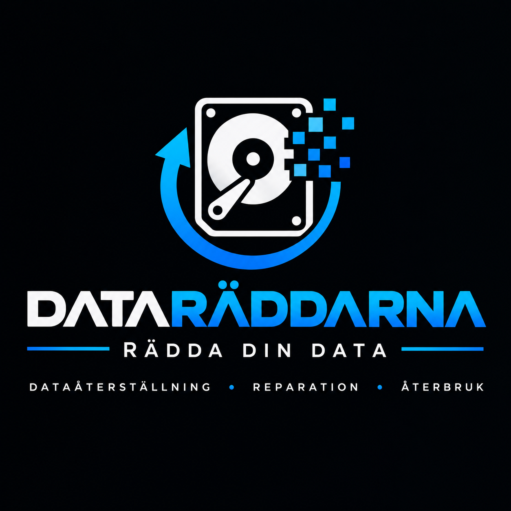

Dataåterställning
Bilder, dokument och annan viktig information från skadade, låsta eller otillgängliga enheter: datorer, mobiltelefoner, kameror, minneskort, externa hårddiskar och andra lagringsenheter.
Vi återställer bilder, dokument och filer från trasiga datorer, mobiler, kameror, minneskort och hårddiskar. Och vi reparerar det som går att reparera, innan någon säger åt dig att köpa nytt.

Är ett minneskort kraftigt skadat kan vi arbeta direkt med minneskretsarna för att försöka läsa av och återskapa den lagrade informationen. Det är metoden vi använder när andra konstaterat att det inte går.
Bilder, dokument och annan viktig information från skadade, låsta eller otillgängliga enheter: datorer, mobiltelefoner, kameror, minneskort, externa hårddiskar och andra lagringsenheter.
Trasig skärm, dator som inte startar, kamera som slutat fungera. Vi undersöker först om produkten går att laga, så att du kan behålla den.
Går något inte att reparera, eller blir det dyrare än produkten är värd, har vi prisvärda datorer, mobiler och annan elektronik. Med reparationsgaranti och möjlighet till försäkring där det är tillämpligt.
Behöver du en produkt under en kortare tid, eller medan din egen repareras? Vi hyr ut vissa produkter.
Har du elektronik med ekonomiskt värde som du inte använder? Vi kan köpa in den, reparera och testa den och sälja den vidare. Då får produkten ett längre liv.
Kom förbi oss i Lund, eller skicka produkten med post om du bor längre bort.
Vi tittar på om produkten går att reparera och om din data går att rädda.
Om reparationen eller återställningen skulle kosta mer än produkten är värd för dig säger vi det, och du bestämmer.
Reparerad produkt, räddade filer, eller ett prisvärt alternativ.
Beskriv vilken produkt det gäller och vad som har hänt. Skriv gärna vad du absolut vill få tillbaka. Stäng av enheten och försök inte laga den själv om informationen är viktig.